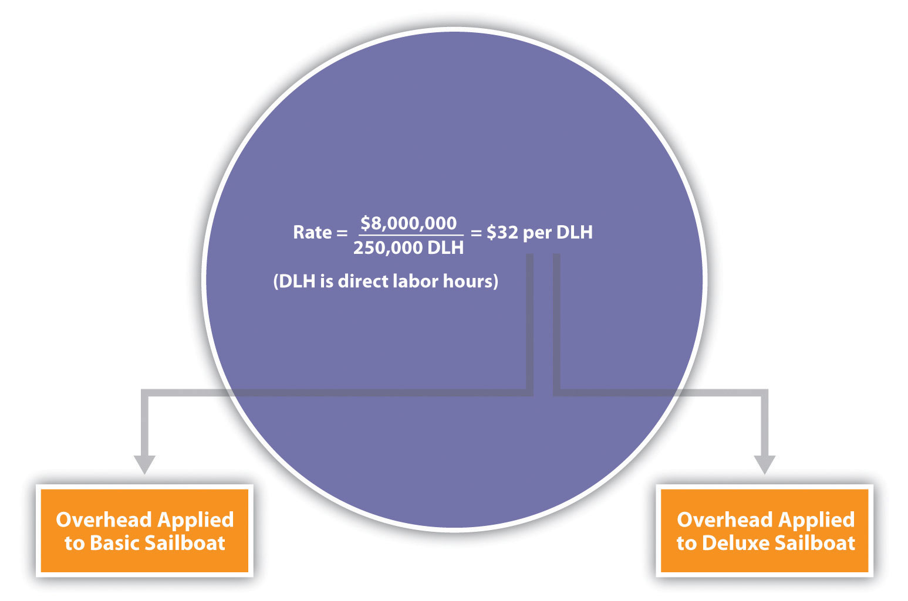
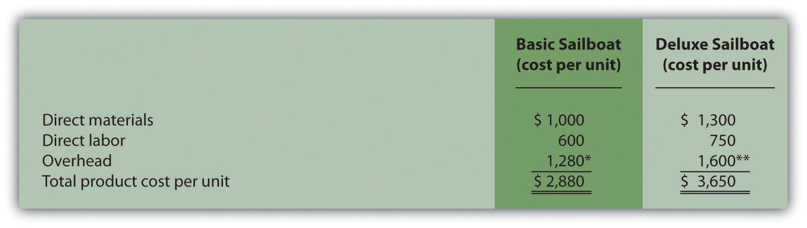
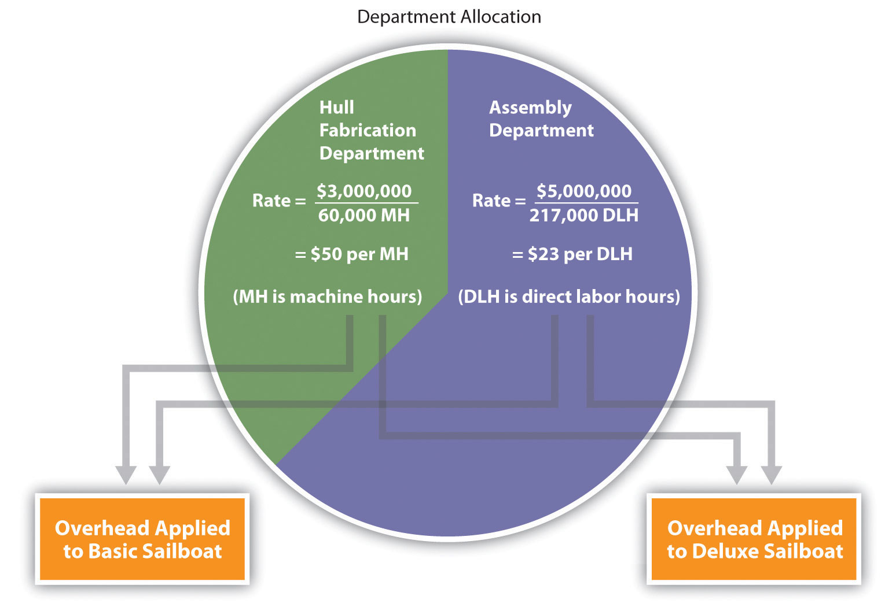

Question: Managers at companies such as Hewlett-Packard often look for better ways to figure out the cost of their products. When Hewlett-Packard produces printers, the company has three possible methods that can be used to allocate overhead costs to products—plantwide allocation, department allocation, and activity-based allocation (called activity-based costing). How do managers decide which allocation method to use?
Answer: The choice of an allocation method depends on how managers decide to group overhead costs and the desired accuracy of product cost information. Groups of overhead costs are called cost poolsA collection of overhead costs, typically organized by department or activity.. For example, Hewlett Packard’s printer production division may choose to collect all factory overhead costs in one cost pool and allocate those costs from the cost pool to each product using one predetermined overhead rate. Or Hewlett Packard may choose to have several cost pools (perhaps for each department, such as assembly, packaging, and quality control) and allocate overhead costs from each department cost pool to products using a separate predetermined overhead rate for each department. In general, the more cost pools used, the more accurate the allocation process.
Question: Let’s look at SailRite Company, which was presented at the beginning of the chapter. The managers at SailRite like the idea of using the plantwide allocation method to allocate overhead to the two sailboat models produced by the company. How would SailRite implement the plantwide allocation method?
Answer: The plantwide allocationA method of allocating costs that uses one cost pool, and therefore one predetermined overhead rate, to allocate overhead costs. method uses one predetermined overhead rate to allocate overhead costs.Regardless of the approach used to allocate overhead, a predetermined overhead rate is established for each cost pool. The predetermined overhead rate is calculated as follows (from Chapter 2 "How Is Job Costing Used to Track Production Costs?"):When activity-based costing is used, the denominator can also be called estimated cost driver activity. One cost pool accounts for all overhead costs, and therefore one predetermined overhead rate is used to apply overhead costs to products. You learned about this approach in Chapter 2 "How Is Job Costing Used to Track Production Costs?" where one predetermined rate—typically based on direct labor hours, direct labor costs, or machine hours—was used to allocate overhead costs. (Remember, the focus here is on the allocation of overhead costs. Direct materials and direct labor are easily traced to the product and therefore are not a part of the overhead allocation process.)
Using SailRite Company as an example, assume annual overhead costs are estimated to be $8,000,000 and direct labor hours are used for the plantwide allocation base. Management estimates that a total of 250,000 direct labor hours are worked annually. These estimates are based on the previous year’s overhead costs and direct labor hours and are adjusted for expected increases in demand the coming year. The predetermined overhead rate is $32 per direct labor hour (= $8,000,000 ÷ 250,000 direct labor hours). Thus, as shown in Figure 3.1 "Using One Plantwide Rate to Allocate SailRite Company’s Overhead", products are charged $32 in overhead costs for each direct labor hour worked.
Figure 3.1 Using One Plantwide Rate to Allocate SailRite Company’s Overhead
Question: Assume SailRite uses one plantwide rate to allocate overhead based on direct labor hours. What is SailRite’s product cost per unit and resulting profit using the plantwide approach to allocate overhead?
Answer: The calculation of a product’s cost involves three components—direct materials, direct labor, and manufacturing overhead. Assume direct materials cost $1,000 for one unit of the Basic sailboat and $1,300 for the Deluxe. Direct labor costs are $600 for one unit of the Basic sailboat and $750 for the Deluxe. This information, combined with the overhead cost per unit, gives us what we need to determine the product cost per unit for each model.
Given the predetermined overhead rate of $32 per direct labor hour calculated in the previous section, and assuming it takes 40 hours of direct labor to build one Basic sailboat and 50 hours to build one Deluxe sailboat, we can calculate the manufacturing overhead cost per unit. Manufacturing overhead cost per unit is $1,280 (= $32 × 40 direct labor hours) for the Basic boat and $1,600 (= $32 × 50 direct labor hours) for the Deluxe boat. Combine the manufacturing overhead with direct materials and direct labor, as shown in Figure 3.2 "SailRite Company Product Costs Using One Plantwide Rate Based on Direct Labor Hours", and we are able to calculate the product cost per unit.
Figure 3.2 SailRite Company Product Costs Using One Plantwide Rate Based on Direct Labor Hours
*$1,280 = 40 direct labor hours per unit × $32 rate.
**$1,600 = 50 direct labor hours per unit × $32 rate.
The average sales price is $3,200 for the Basic model and $4,500 for the Deluxe. Using the product cost information in Figure 3.2 "SailRite Company Product Costs Using One Plantwide Rate Based on Direct Labor Hours", the profit per unit is $320 (= $3,200 price – $2,880 cost) for the Basic model and $850 (= $4,500 price – $3,650 cost) for the Deluxe. Recall from the opening dialogue that SailRite’s overall profit has declined ever since it introduced the Deluxe model even though the data shows both products are profitable.
Question: The managers at SailRite like the idea of using the plantwide allocation approach, but they are concerned that this approach will not provide accurate product cost information. Although the plantwide allocation method is the simplest and least expensive approach, it also tends to be the least accurate. In spite of this weakness, why do some organizations prefer to use one plantwide overhead rate to allocate overhead to products?
Answer: Organizations that use a plantwide allocation approach typically have simple operations with a few similar products. Management may not want more accurate product cost information or may not have the resources to implement a more complex accounting system. As we move on to more complex costing systems, remember that these systems are more expensive to implement. Thus the benefits of having improved cost information must outweigh the costs of obtaining the information.
Question: Assume the managers at SailRite Company prefer a more accurate approach to allocating overhead costs to its two products. As a result, they are considering using the department allocation approach. How would SailRite form cost pools for the department allocation approach?
Answer: The department allocationA method of allocating costs that uses a separate cost pool, and therefore a separate predetermined overhead rate, for each department. approach is similar to the plantwide approach except that cost pools are formed for each department rather than for the entire plant, and a separate predetermined overhead rate is established for each department. Remember, total estimated overhead costs will not change. Instead, they will be broken out into various department cost pools. This approach allows for the use of different allocation bases for different departments depending on what drives overhead costs for each department. For example, the Hull Fabrication department at SailRite Company may find that overhead costs are driven more by the use of machinery than by labor, and therefore decides to use machine hours as the allocation base. The Assembly department may find that overhead costs are driven more by labor activity than by machine use and therefore decides to use labor hours or labor costs as the allocation base.
Assume that SailRite is considering using the department approach rather than the plantwide approach for allocating overhead. The cost pool in the Hull Fabrication department is estimated to be $3,000,000 for the year, and the cost pool in the Assembly department is estimated at $5,000,000. Note that total estimated overhead cost is still $8,000,000 (= $3,000,000 + $5,000,000). Machine hours (estimated at 60,000 hours) will be used as the allocation base for Hull Fabrication, and direct labor hours (estimated at 217,000 hours) will be used as the allocation base for Assembly. Thus two rates are used to allocate overhead (rounded to the nearest dollar) as follows:
As shown in Figure 3.3 "Using Department Rates to Allocate SailRite Company’s Overhead", products going through the Hull Fabrication department are charged $50 in overhead costs for each machine hour used. Products going through the Assembly department are charged $23 in overhead costs for each direct labor hour used.
Figure 3.3 Using Department Rates to Allocate SailRite Company’s Overhead
The department allocation approach allows cost pools to be formed for each department and provides for flexibility in the selection of an allocation base. Although Figure 3.3 "Using Department Rates to Allocate SailRite Company’s Overhead" shows just two rates, many companies have more than two departments and therefore more than two rates. Organizations that use this approach tend to have simple operations within each department but different activities across departments. One department may use machinery, while another department may use labor, as is the case with SailRite’s two departments. This approach typically provides more accurate cost information than simply using one plantwide rate but still relies on the assumption that overhead costs are driven by direct labor hours, direct labor costs, or machine hours. This assumption of a causal relationship is increasingly less realistic as production processes become more complex.
The plantwide and department allocation methods are “traditional” approaches because both typically use direct labor hours, direct labor costs, or machine hours as the allocation base, and both were used prior to the creation of activity-based costing in the 1980s.
Kline Company expects to incur $800,000 in overhead costs this coming year—$200,000 in the Cut and Polish department and $600,000 in the Quality Control department. Total annual direct labor costs are expected to be $160,000. The Cut and Polish department expects to use 25,000 machine hours, and the Quality Control department plans to utilize 50,000 hours of direct labor time for the year.
Required:
Solutions to Review Problem 3.2
The plantwide rate is calculated as follows:
The department rates are calculated using the same formula as the plantwide rate. However, overhead costs and activity levels are estimated for each department rather than for the entire company, and two separate rates are calculated: